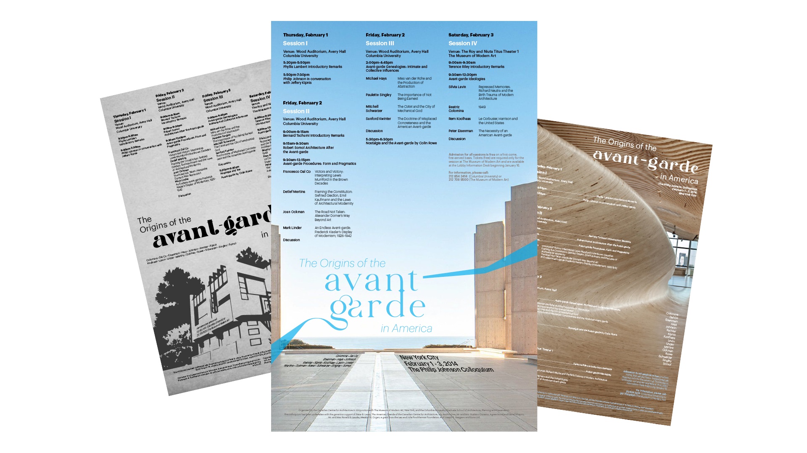
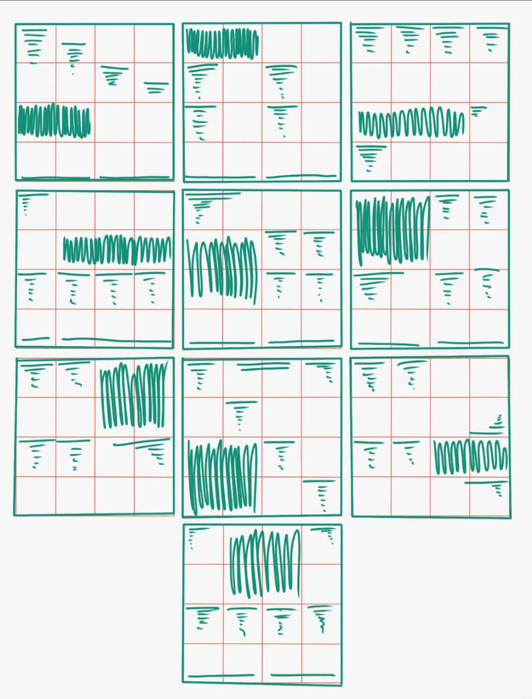
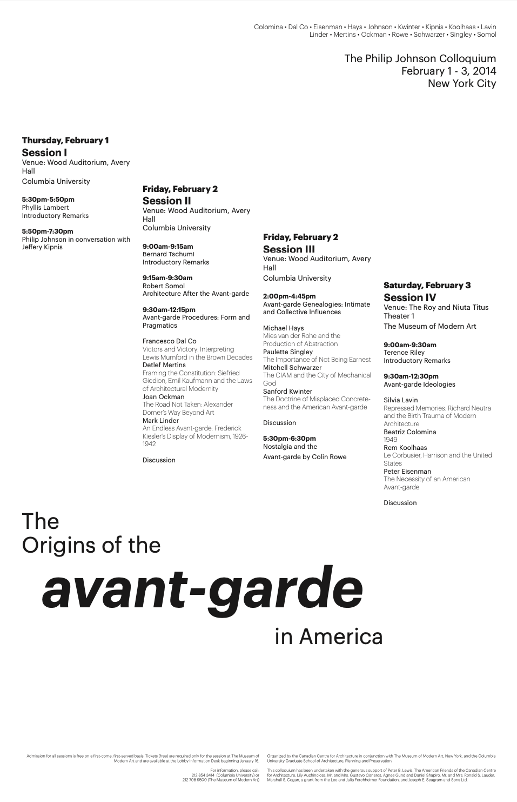
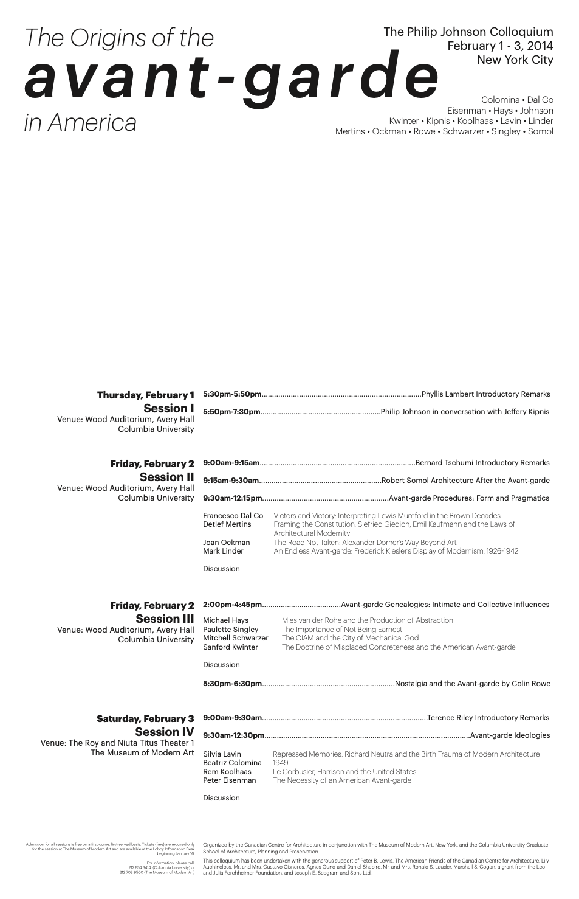
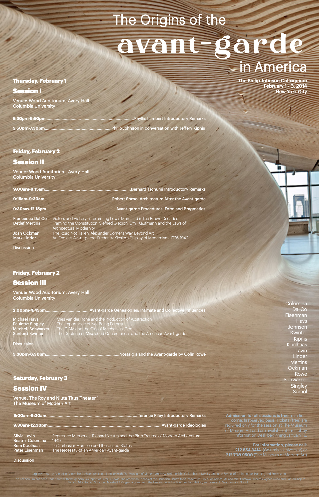
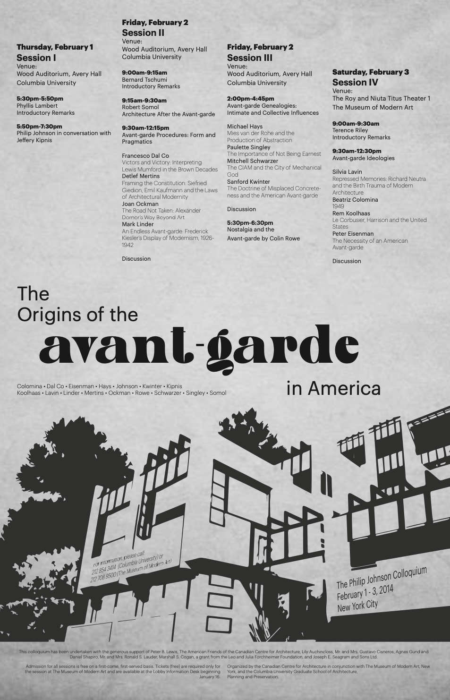
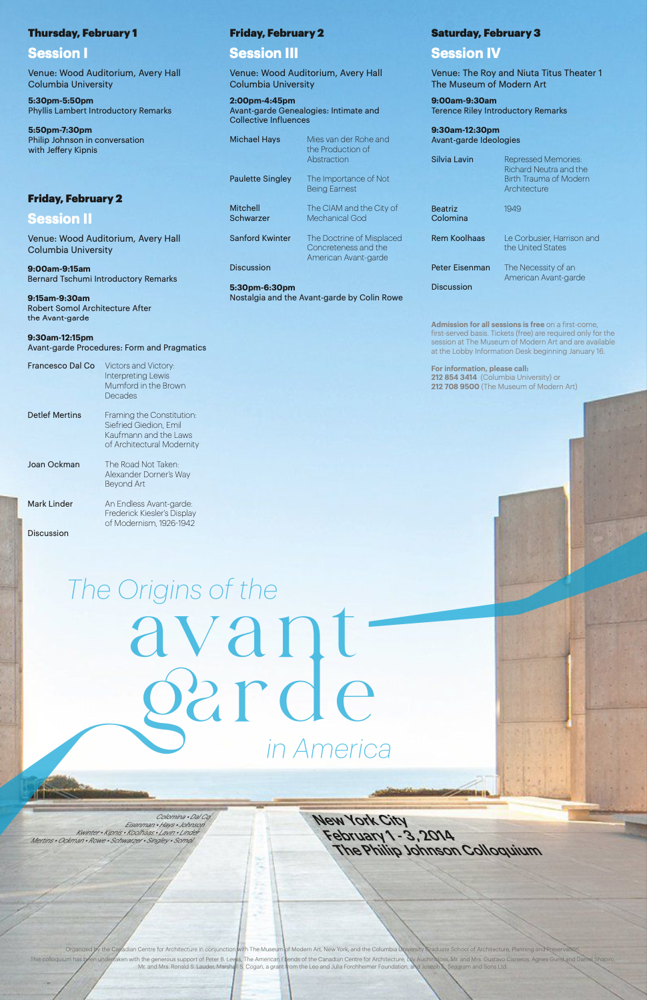

-
3 | 三
Case 2: Event Poster
Avant-Garde Event
-
Iterating Poster Designs for a mock event.
Sketch layouts to keep in mind user readability and flow.
 Expanding the grid and layout sketches with typography.
 Incorporating imagery shows more purpose.
The journey to the final posters gives it meaning and personality.
illustrator | indesign | photoshop